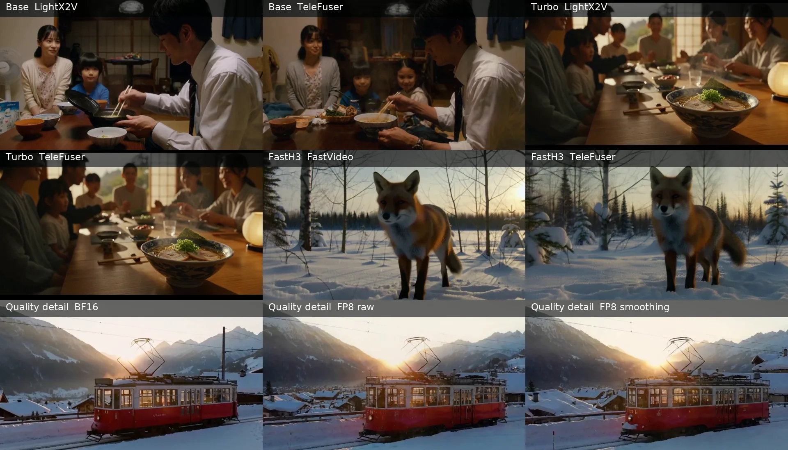
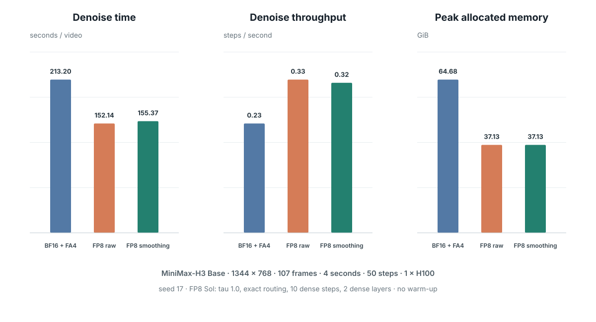
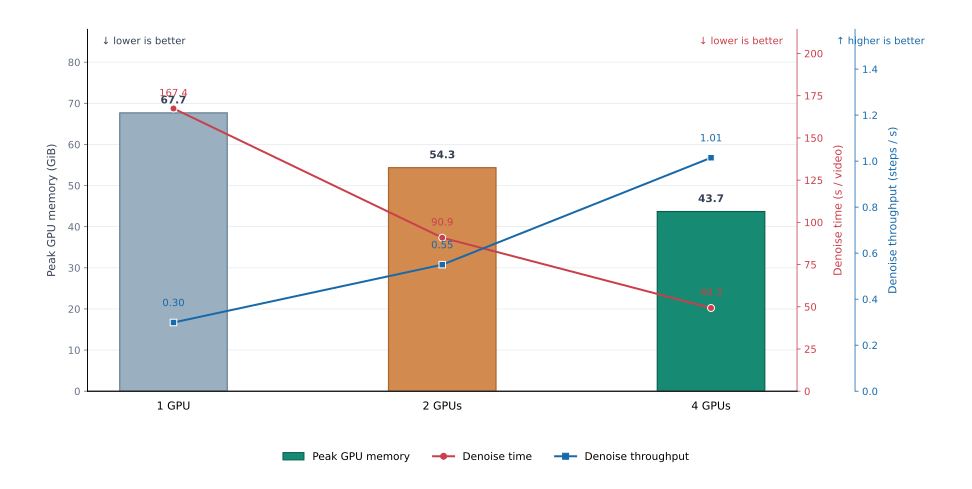
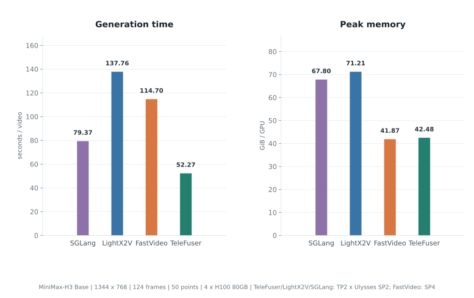
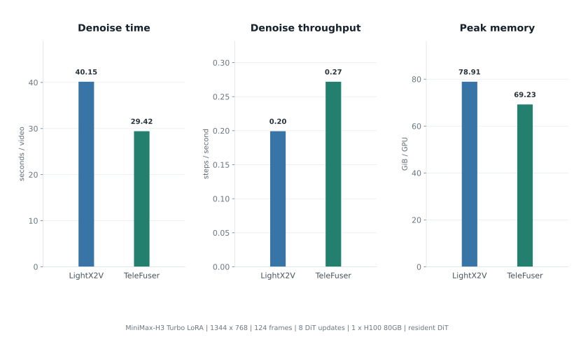
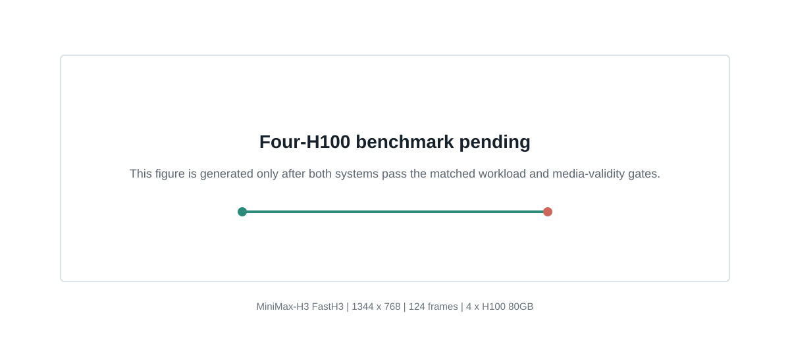

Q-SPA：用 TeleFuser 实现量化、稀疏与并行协同的世界模型推理
TeleFuser 是一个面向实时世界模型和多模态生成的开源推理与服务框架，支持分布式推理、有状态服务和流式传输。本文介绍 Q-SPA（Quantized Sparse-Parallel Attention）：一套协同设计 FP8 量化、动态稀疏 attention 与序列并行的执行方案。

本文以 MiniMax-H3 为主要测试模型。它的 DiT 联合生成高分辨率视频和音频，计算同时集中在大规模 Linear/MLP 和长序列 attention。性能优化必须和运动稳定性、画面细节及音频完整性一起验证。
Q-SPA 包含三个相互关联的执行维度：
- 面向 Linear 与 attention 的 FP8 低精度计算；
- 基于 Sol-Attn 的动态 block 稀疏，以及质量敏感区域的稠密计算；
- Ulysses SP、Tensor Parallel 与通信计算重叠。
Insights
- 量化与稀疏可以同时使用。稀疏 attention kernel 直接消费 FP8 表示时，两项 优化能够共同贡献加速收益。
- 通用量化方案在 world model 的 DiT 上容易出现质量波动。attention 布局、 激活范围和硬件相关 kernel 需要有针对性的重构，而不是套用通用量化封装。
- World-model 请求不仅包含长序列 DiT 去噪，还要完成条件理解与推理、视频和音频联合生成及解码。模型即使能够放入单卡，整条生成链路仍面临很高的计算压力；序列并行、张量并行与通信计算重叠可以把多卡算力转化为端到端延迟收益。
TeleFuser 的 Base H3 请求从 1 卡扩展到 2 卡和 4 卡，四卡去噪吞吐达到单卡的 3.40 倍。评测还包括 SGLang、LightX2V、FastVideo 以及 Turbo LoRA 和 FastH3 Adapter。
后续章节依次讨论四个问题：
- 为什么现有量化 kernel 很难直接接上动态稀疏 attention？
- Q-SPA 如何统一量化 scale、稀疏 block 和跨卡分片的数据布局？
- FP8 attention 如何控制生成质量损失？
- Q-SPA 如何扩展到多卡？
量化与稀疏 attention 的布局冲突
世界模型的主要计算开销来自两部分：Linear/MLP 的稠密计算，以及视觉、音频和条件 token 带来的长序列 attention。FP8 降低投影层和 MLP 的计算与带宽开销，Sol-Attn 则跳过不重要的 attention block。两者分别覆盖 DiT 的主要稠密计算和长序列 attention，进一步加速需要让它们在同一执行路径中工作。
两类优化的核心冲突在于数据布局。量化按照 tensor、row、group 或 block 划分数据，并为每个量化单元保存对应的 scale；该映射通常依赖固定的 tensor 布局。Sol-Attn、Top-K、Top-P 等稀疏方法会在运行时选择并淘汰 attention block，保留的 K/V 随后需要 gather、压紧或重新编号。此时，物理 tile 与原量化分组不再对齐，dense FP8 kernel 无法将重排后的数据直接关联到原有 scale。
现有量化路径通常把量化视为一次独立的数据转换：offline 量化在模型加载前完成，online 或 lazy 量化则在 tensor 首次使用或进入算子时生成低精度数据和 scale；转换完成后，kernel 默认数据布局保持不变。稀疏 attention 不同，它会在每次 forward 中根据当前 Q/K/V 重新选择、淘汰和压紧 block。持续发生的布局重排会改变 row、channel 和 group 的边界，使预先组织的量化数据与 scale 失去对应关系。即使 per-tensor 只有一个全局 scale，数值上仍然有效，既有 kernel 的打包顺序和寻址约定也已被打破。因此，量化与动态稀疏不能作为两个独立开关直接叠加；它们需要共同维护重排后的数据、scale、索引和 tile 映射。
一种兼容方案是将选中的 block 反量化为 BF16，再交由稀疏 kernel 处理，但额外的数据转换和高精度计算会抵消部分量化收益。要保留端到端低精度执行，稀疏索引、量化 scale 和 kernel tile 必须采用兼容的布局。
硬件差异是另一项约束。低精度格式和 kernel 并不覆盖所有 GPU 架构。例如，面向更新硬件的 MXFP8、NVFP4 实现不会自动支持 SM90 等仍被大量使用的机器平台。新设备的发布不会使既有算力随之消失；TeleFuser 针对这些平台补齐低精度执行路径，让它们也能高效运行最新的 world model。
Q-SPA 让稀疏索引、量化 scale 与 kernel tile 采用一致的布局约定。归一化、位置编码等敏感计算保留高精度，主要 Linear 和被选中的 attention block 则继续使用与硬件匹配的 FP8 kernel。
Q-SPA 在 TeleFuser 中的实现
在 MiniMax-H3 上，Q-SPA 覆盖三层执行逻辑：DiT 稠密计算、长序列 attention 和多卡 tensor 布局。
让 FP8 和稀疏 block 使用同一份布局
TeleFuser 将 FP8 应用于 DiT 的投影层和 MLP，并将低精度执行延伸到 Sol-Attn。稀疏 block 索引、量化 scale 和 attention kernel 使用的 tile 遵循统一的布局约定，使选中的 QKV block 能够直接参与 FP8 计算，无需预先转换为 BF16。
分布式 attention
TeleFuser 不只是把 Ulysses SP 接入 MiniMax-H3，还针对 FP8、Sol-Attn 和视频 token 布局重构了多卡执行路径。Ulysses All-to-All 建立各 rank 的局部 attention 视图后，再完成 FP8 quantization 和 Sol-Attn routing，使量化 scale、稀疏 block 与实际计算布局保持一致。3D 视频 token 的 reorder 被移到序列切分之前；全局共享的 scalar timestep 在各 rank 复制，per-token timestep 则随 token 一起切分，从而保持模型语义和单卡结果一致。
在此基础上，TeleFuser 为 sequence parallel 补充了专用 kernel，并将 Ulysses 通信与 attention 计算重叠。该路径支持双卡和四卡 MiniMax-H3，包括 TP2 × Ulysses SP2，使 FP8 与稀疏带来的算术加速能够继续转化为多卡端到端收益。
覆盖不同 H3 模型变体
MiniMax-H3 除了 Base 模型，还有 Turbo LoRA 和 FastH3 一类加速 Adapter。TeleFuser 会先把 Adapter 合并到有效权重，再建立可复用的 FP8 表示，避免量化的仍是原始 Base 权重。
Turbo LoRA 等蒸馏 Adapter 可以减少去噪步数，其他 Adapter 则用于提高特定任务的输出质量。Q-SPA 会把 Adapter 合并后的有效权重纳入 FP8、稀疏和并行执行路径，从而降低这些模型的端到端推理成本，而不只优化 Base checkpoint。
控制误差，并扩展到多卡
Diffusion 的每一步输出都会成为下一步输入。FP8 或稀疏 attention 引入的局部误差可能沿去噪过程累积，因此评测同时覆盖 kernel 吞吐、tensor 误差、最终视频和音频。
FP8 attention 的误差控制
MiniMax-H3 实际层的 profile 显示，部分 K/V 的均值明显偏离零点，直接使用对称 FP8 量化会损失有效动态范围。TeleFuser 在计算前对 K/V 进行中心化，并在 attention 输出中恢复等价偏移。这是一种针对 attention 数据分布设计的非对称量化处理。
中心化和输出修正已经融合进 FP8 Sol-Attn。最早的非融合版本让去噪时间增加 11.7%，融合后开销降到 2.2%。在捕获的真实 H3 层上，K 的量化 MSE 降低 21.65%，attention 输出 MSE 降低 8.18%；KV smoothing 和 V correction 在优化配置中默认开启。
质量实验使用固定机位拍摄雪地电车，三组运行采用相同 prompt、seed 和输出规格。车体、车窗、轨道和受电弓的刚性结构可直接反映时序几何是否稳定。
| 模型 | 分辨率与帧数 | 采样 | GPU | Prompt / seed |
|---|---|---|---|---|
| MiniMax-H3 Base，T2VA | 1344 × 768，107 帧，4 秒，24 fps | 50 points / 49 DiT updates | 1 × H100 | 雪地电车固定机位 / 17 |

平滑 FP8 的去噪吞吐比 BF16 Linear + FlashAttention 4 提高 37.2%，峰值分配显存降低 42.6%；相对未平滑 FP8，融合修正增加 2.1% 去噪时间。
| 配置（BF16 为 reference） | 视频 PSNR ↑ | 视频 SSIM ↑ | 音频 cosine ↑ | 频谱收敛误差 ↓ |
|---|---|---|---|---|
| FP8，不使用 smoothing | 19.63 dB | 0.6712 | 0.8504 | 0.5055 |
| FP8，开启 smoothing | 19.27 dB | 0.6700 | 0.8891 | 0.4537 |
Prompt（三个配置）： Locked-off cinematic wide shot of a red vintage tram gliding slowly through a snowy alpine village at sunrise. The tram remains rigid and geometrically consistent, its windows and wheels stay aligned. Light snow falls; soft rail sounds and distant church bells are synchronized with the scene. No people, no cuts, no camera movement.
在视频后半段，未平滑输出的车顶标识、受电弓连线和窗框对齐相较平滑输出更不稳定。
开箱即用、可继续调优的稀疏策略
不同模型和生成任务对稀疏 attention 的敏感位置并不相同。TeleFuser 提供 dense window、dense layer、阈值模式和稀疏强度等配置接口，便于针对新的模型或质量目标继续调优；MiniMax-H3 的默认配置已经过性能与生成质量验证，无需用户手动选择稀疏参数。
多卡执行
Q-SPA 将 Ulysses SP 与 Tensor Parallel 组合，并通过专用 kernel 和通信计算重叠降低分布式开销。FP8 quantization、Sol-Attn routing、视频 token 和 timestep 均遵循同一分片语义，使单卡与多卡使用同一条质量优化路径。
性能与生成效果
测试配置
除特别说明外，测试均使用 MiniMax-H3 的 768p 配置，输出 24 fps H.264 视频和 32 kHz 双声道 AAC 音频。
| 实验 | 模型与任务 | 输出规格 | 采样 | GPU | 并行拓扑 |
|---|---|---|---|---|---|
| TeleFuser 扩展性 | Base H3，T2VA | 1344 × 768，124 帧，5 秒 | 50 points / 49 DiT updates | 1 / 2 / 4 | 单卡 / TP2 / TP2 × Ulysses SP2 |
| 四卡框架对比 | Base H3，T2VA | 1344 × 768，124 帧，5 秒 | 50 points / 49 DiT updates | 4 | TP2 × Ulysses SP2；FastVideo 为 SP4 |
| FP8 smoothing | Base H3，T2VA | 1344 × 768，107 帧，4 秒 | 50 points / 49 DiT updates | 1 | 单卡 |
| Turbo LoRA | MiniMax-H3 Turbo，I2AV | 1344 × 768，124 帧，5 秒 | 9 points / 8 DiT updates | 1 | 单卡 |
| FastH3 Adapter | FastH3 dense，T2VA | 1344 × 768，124 帧，5 秒 | 5 points / 4 DiT updates | 1 | 单卡 |
扩展性实验关闭 feature cache 和 KV smoothing，用于单独测量并行收益。Smoothing、Turbo 和 FastH3 的具体低精度配置在对应小节列出。
TeleFuser 1、2、4 卡扩展性
三组运行使用相同 prompt、seed、FP8 Linear 和 FP8 Sol-Attn。单卡直接执行；两卡使用 TP2 切分模型权重和计算；四卡在 TP2 之上增加 Ulysses SP2 切分长序列。

去噪时间从单卡的 167.41 秒降至两卡的 90.90 秒，再降至四卡的 49.28 秒。相邻两次扩展分别获得 1.84 倍和 1.84 倍加速；50-step 吞吐为 0.299、0.550 和 1.015 step/s。
四卡 Base H3 框架对比
四个框架采用相同的 Base H3 输出规格和 50-point schedule，并关闭 feature cache。SGLang、LightX2V 和 TeleFuser 使用 TP2 × Ulysses SP2，FastVideo 使用 SP4。FastVideo 与 SGLang 分别使用 Base H3 官方示例和 MiniMax-H3 官方 cookbook。

TeleFuser 完整生成耗时 52.27 秒；LightX2V 为 137.76 秒，FastVideo 为 114.70 秒，SGLang 为 79.37 秒。在这一请求上，TeleFuser 相比三者分别快 2.64 倍、2.19 倍和 1.52 倍。TeleFuser 峰值显存为 42.5 GiB/GPU，LightX2V、FastVideo 和 SGLang 分别为 71.2、41.9 和 67.8 GiB。相对 LightX2V，TeleFuser 去噪时间从 129.22 秒降至 49.28 秒，50-point 吞吐提高 162.2%。
Prompt（四个框架）： Steam rises from the ramen while the family talks in the background.
Adapter 工作负载
Turbo LoRA 与 FastH3 使用不同的权重和采样协议，当前框架支持范围如下。
| 框架 | MiniMax-H3 Turbo LoRA | FastH3 Preview Adapter |
|---|---|---|
| TeleFuser | ✓ 已支持 | ✓ 已支持 |
| LightX2V | ✓ 已支持 | ✗ 未支持 |
| FastVideo | ✗ 未支持 | ✓ 已支持 |
| SGLang | ✓ 已支持 | ✗ 未支持 |
Turbo LoRA 对比 TeleFuser 与 LightX2V，FastH3 对比 TeleFuser 与 FastVideo。
MiniMax-H3 Turbo LoRA
两套框架均使用 8-step v1.0 768p Adapter，DiT 常驻 GPU。TeleFuser 在构建 FP8 权重前合并 LoRA；对比不包含 CPU block offload。

展示 Prompt： LightX2V：Steam rises from the ramen while the family talks in the background. TeleFuser：A level tripod shot with a subtle push-in; no orbit, roll, or spinning.
FastH3 dense adapter
FastVideo 和 TeleFuser 使用相同 dense adapter、prompt 与 seed，实际执行四次 DiT，去噪期间均不使用 CPU offload。结果为一次 warm-up 后三次正式生成的中位数。

Prompt（两个框架）： integrated_multimodal_description: A red fox runs through fresh snow at dawn. overall_soundscape: Fast pawsteps in snow, winter wind, and distant birds.
FastH3 只比较去噪阶段，因为两套记录采用了不同的 prompt-conditioning cache 策略，完整请求时间不具备相同口径。
结语
Q-SPA 在 TeleFuser 中解决了三个直接相关的问题：
- FP8 scale 与动态稀疏 block 的布局对齐；
- FP8 和稀疏共同作用时的生成误差控制；
- 稀疏 FP8 attention 在 Ulysses SP 与 Tensor Parallel 下的多卡执行。
TeleFuser 支持直接运行 Base H3，也支持在合并 Turbo LoRA 或 FastH3 Adapter 后生成相应的 FP8 权重。Adapter 可以减少去噪步数或提高特定任务的输出质量；Q-SPA 将合并后的有效权重纳入低精度、稀疏和并行优化路径，降低实际 Adapter 模型的端到端推理成本。
四卡 Base H3 测试中，TeleFuser 完整生成耗时 52.27 秒，相比 LightX2V、FastVideo 和 SGLang 分别快 2.64 倍、2.19 倍和 1.52 倍。Turbo LoRA 与 FastH3 测试也优于各自的 LightX2V 和 FastVideo 对照。
这些实现与实验带来了三点面向 world-model 推理实践的 Insights：
- FP8 与稀疏 attention 应当作为一条执行路径共同设计。单独使用任一优化 仍会留下大量 DiT 计算；让稀疏 kernel 直接消费量化表示，才能同时获得两者的收益。
- 通用量化封装不能保证 world model 的生成质量。长序列 attention 的布局和 激活统计具有模型与硬件相关性，需要重新设计面向质量的量化与 kernel 实现。
- World model 的单次请求同时承担条件理解与推理、长序列视频/音频联合去噪和解码，算力压力不能用权重能否装入单卡来衡量。Ulysses SP、Tensor Parallel 与通信计算重叠共同缩短完整生成链路；MiniMax-H3 的去噪时间从单卡的 167.41 秒降至两卡的 90.90 秒和四卡的 49.28 秒，四卡吞吐达到单卡的 3.40 倍。